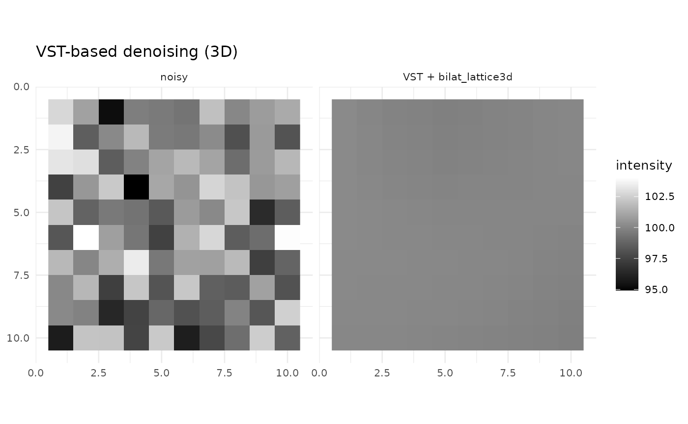

Variance–Stabilizing Transform (VST) for Rician Magnitude
fmrismooth authors
2025-08-28
vst.RmdMagnitude MR data follows a Rician distribution. At moderate SNR, the noise variance depends on the underlying signal, which complicates denoising methods designed for additive Gaussian noise. A simple strategy is to apply a variance–stabilizing transform (VST), denoise under a Gaussian assumption, then invert the transform.
Forward and inverse transforms
The forward transform maps magnitude x to
z = sqrt(max(x^2 - 2*sigma^2, 0)). The inverse maps back
via x = sqrt(max(z^2 + 2*sigma^2, 0)). The parameter
sigma is the noise standard deviation in magnitude
units.
Wrapping a denoiser (how to use with this package)
vst_denoise(x, sigma, denoise_fun, ...) applies the
forward transform, calls a denoiser, then inverts. The
denoise_fun can be any function in this package that
accepts the data as its first argument and returns an array of the same
shape. Extra arguments are forwarded via ....
The most convenient usage is to pass a function directly and supply
its parameters in ....
d4 <- c(8, 8, 8, 12)
clean <- array(100, dim = d4)
noisy <- sqrt((clean + array(rnorm(prod(d4), sd = 2), dim = d4))^2) # Rician-like
# Use joint bilateral in the Gaussianized (VST) domain
out_bilat <- vst_denoise(
noisy,
denoise_fun = bilat_lattice4d,
sigma_sp = 2.0, sigma_t = 0.4, sigma_r = 8
)
# Or use space–time TV in the VST domain
out_tv <- vst_denoise(
noisy,
denoise_fun = tv_denoise4d,
lambda_s = 0.6, lambda_t = 0.2, iters = 20L
)
c(var_noisy = var(as.vector(noisy)),
var_bilat = var(as.vector(out_bilat)),
var_tv = var(as.vector(out_tv)))
#> var_noisy var_bilat var_tv
#> 3.97367690 0.03625491 0.20270265
zmid <- ceiling(d4[3]/2); tmid <- ceiling(d4[4]/2)
viz <- rbind(
slice_df4d(noisy, zmid, tmid, "noisy (magnitude)"),
slice_df4d(out_bilat, zmid, tmid, "VST + bilat_lattice4d"),
slice_df4d(out_tv, zmid, tmid, "VST + tv_denoise4d")
)
ggplot(viz, aes(x, y, fill = val)) + geom_raster() + coord_fixed() + scale_y_reverse() +
scale_fill_gradient(low = "black", high = "white") + facet_wrap(~method) + theme_minimal(base_size = 10) +
labs(title = "VST-based denoising: mid-slice/frame", x = NULL, y = NULL, fill = "intensity")
You can also pass an anonymous function if you prefer to pre‑bind certain arguments:
out_custom <- vst_denoise(
noisy,
denoise_fun = function(z) bilat_lattice4d(z, sigma_sp = 2.5, sigma_t = 0.5, sigma_r = 10)
)
dim(out_custom)
#> [1] 8 8 8 12Using with pipelines
You can wrap end‑to‑end pipelines, but avoid configurations that internally estimate a Rician noise sigma from the (VST‑transformed) data. For example, prefer explicit parameters over auto‑parameter estimation when wrapping pipelines:
# OK: wrap a pipeline you configure explicitly
out_ok <- vst_denoise(
noisy,
denoise_fun = bilat_lattice4d, # core smoother used in smooth_auto()
sigma_sp = 2.5, sigma_t = 0.5, sigma_r = 12
)
# Avoid: wrapping smooth_auto() with auto_params=TRUE will try to
# estimate a Rician sigma on VST data. If you do wrap it, set auto_params=FALSE
# and pass explicit parameters.3D usage
For 3D volumes there is no temporal dimension to estimate
sigma from; you must supply it:
d3 <- c(10, 10, 10)
vol <- array(100, dim = d3) + array(rnorm(prod(d3), sd = 2), dim = d3)
out3d <- vst_denoise(vol, sigma = 2.0, denoise_fun = bilat_lattice3d, sigma_sp = 2.0, sigma_r = 8)
all.equal(dim(out3d), d3)
#> [1] TRUE
# visualize 3D mid-slice
zmid <- ceiling(d3[3]/2)
viz3 <- rbind(
transform(expand.grid(x = seq_len(d3[1]), y = seq_len(d3[2])), val = as.vector(vol[,,zmid]), method = "noisy"),
transform(expand.grid(x = seq_len(d3[1]), y = seq_len(d3[2])), val = as.vector(out3d[,,zmid]), method = "VST + bilat_lattice3d")
)
ggplot(viz3, aes(x, y, fill = val)) + geom_raster() + coord_fixed() + scale_y_reverse() +
scale_fill_gradient(low = "black", high = "white") + facet_wrap(~method) + theme_minimal(base_size = 10) +
labs(title = "VST-based denoising (3D)", x = NULL, y = NULL, fill = "intensity")
When to use VST
VST is especially helpful when the noise level varies with signal intensity (magnitude MR). It can make downstream parameter choices more stable and bring the noise closer to additive Gaussian, which is what bilateral, guided, TV and MP–PCA assume. For complex‑valued reconstructions or already Gaussianized data, you may skip VST and denoise directly.